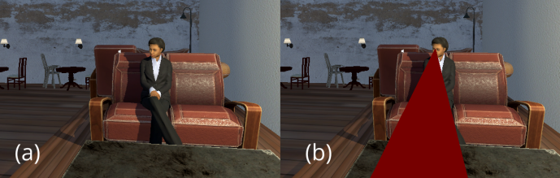

VR, Gaze, and Visual Impairment: An Exploratory Study of the Perception of Eye Contact across different Sensory Modalities for People with Visual Impairments in Virtual Reality | HCI Stuttgart

Authors. Markus Wieland, Michael Sedlmair, Tonja-Katrin Machulla
Venue. CHI (2023)
Abstract. As social virtual reality (VR) becomes more popular, avatars are being designed with realistic behaviors incorporating non-verbal cues like eye contact. However, perceiving eye contact during a onversation can be challenging for people with visual impairments. VR presents an opportunity to display eye contact cues in alternative ways, making them perceivable for people with visual impairments. We performed an exploratory study to gain initial insights on designing eye contact cues for people with visual impairments, including a focus group for a deeper understanding of the topic. We implemented eye contact cues via visual, auditory, and tactile sensory modalities in VR and tested these approaches with eleven participants with visual impairments and collected qualitative feedback. The results show that visual cues indicating the gaze direction were preferred, but auditory and tactile cues were also prevalent as they do not superimpose additional visual information.